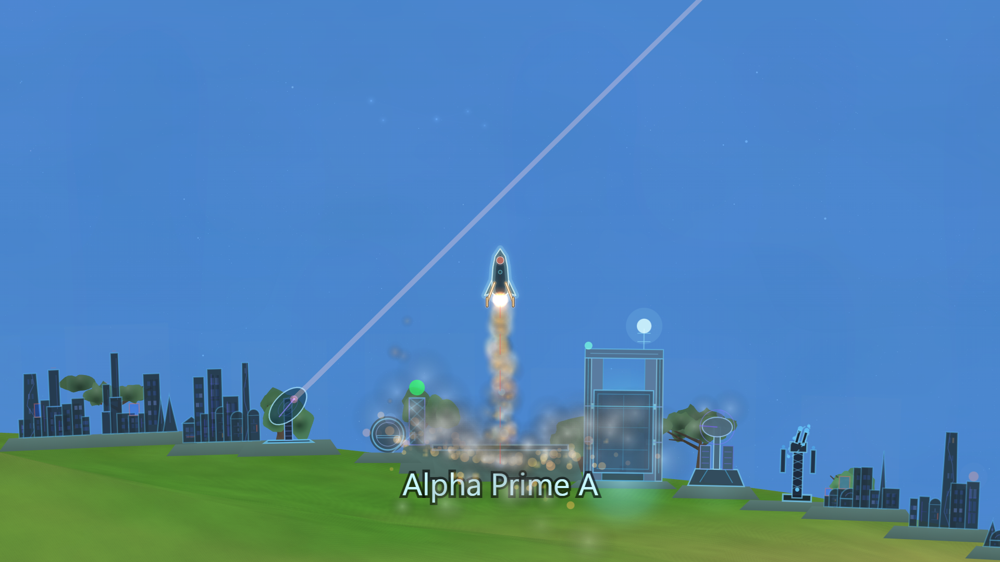
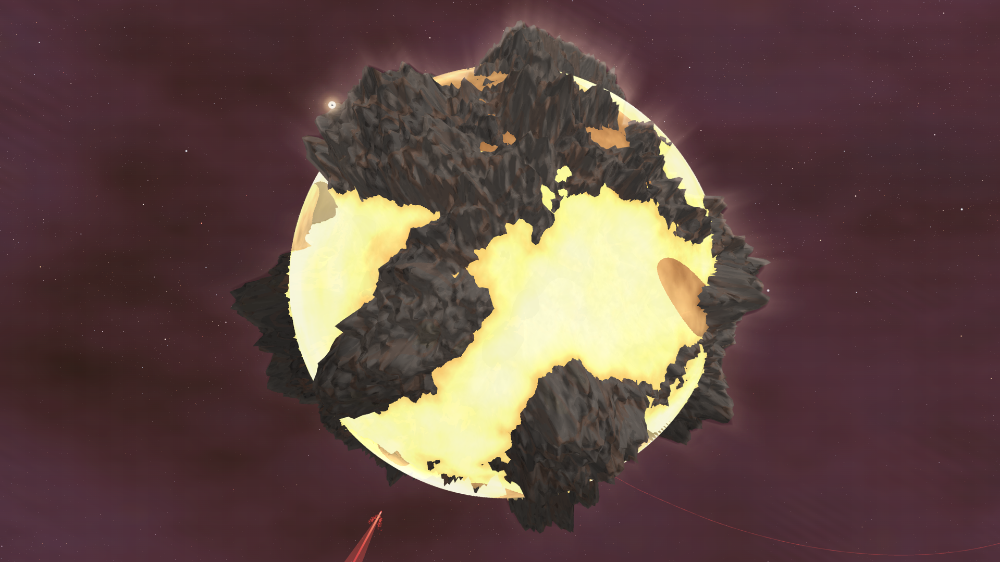
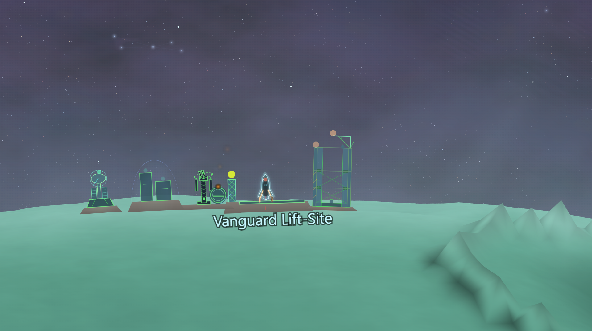
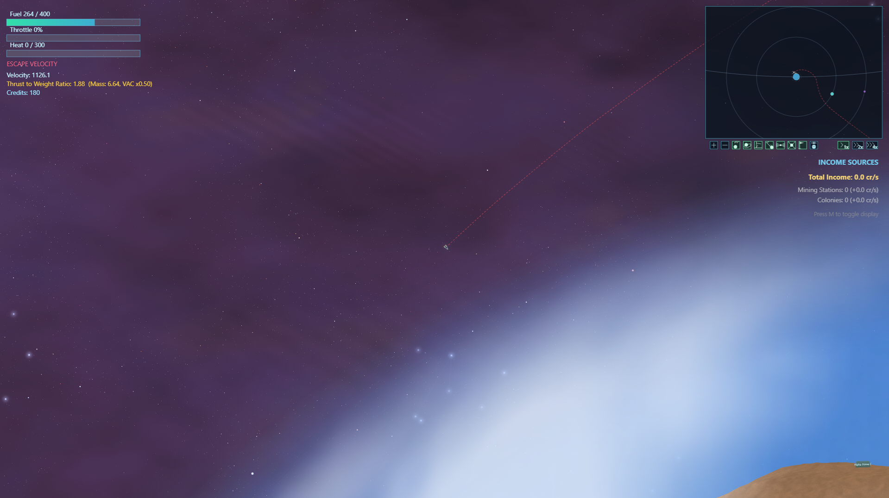
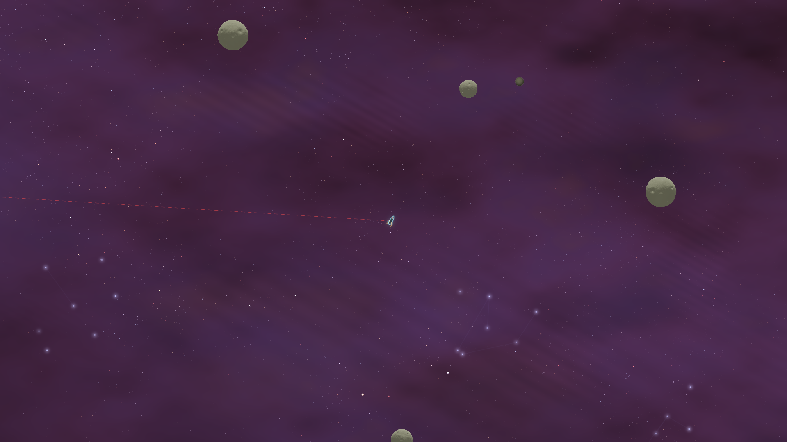
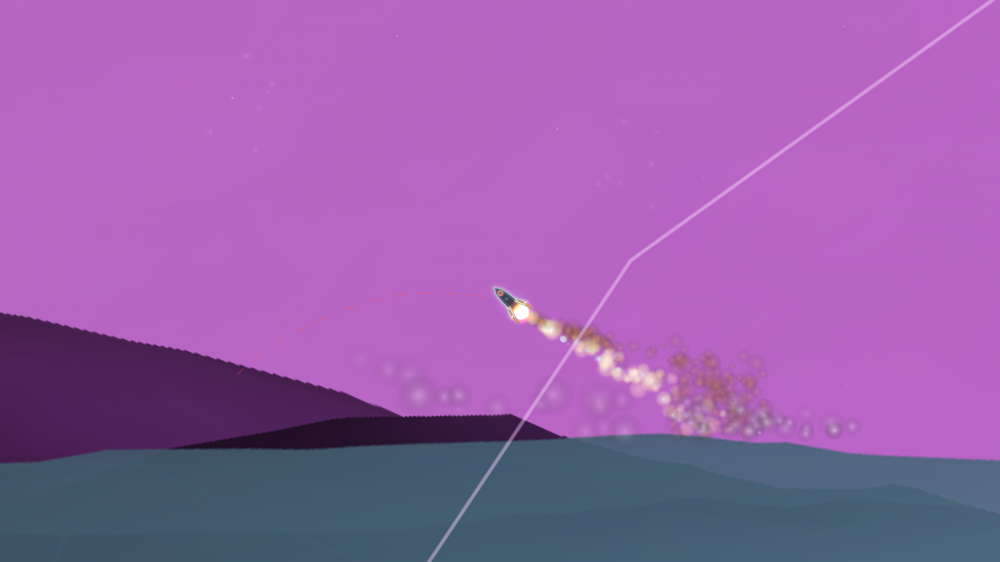

Factsheet
| Developer | André B. Silva / Tremoço Games |
| Release | Early Access Q1 2027 |
| Platforms | Windows, Mac, Linux |
| Genre | Physics-based Space Agency Simulation |
| Price | TBA |
| Languages | EN, PT, ES, FR, DE, ZH, RU |
| Press Contact | tremocogames@gmail.com |
Description
Imagine the long lost child of KSP and Lunar Lander. With the same amount of chaos, high intensity-high reward, but in a seemingly casual Sunday afternoon relaxed aesthetics. Start with almost nothing. Build the capability to see farther, reach farther, and unlock the next layer of space.
Establish observatories, deploy telescopes, and grow your infrastructure to reveal new targets and opportunities and then aim upwards and put your flying skills to the test.
9.8 is a 2D space-agency simulator where a fully physics-driven universe (N-body orbits, atmospheres, heat management, hydrodynamics) makes every small step earned. Build your program from first hops to interplanetary operations through a uniquely designed local star-system cluster.

Features
Fly Rockets, Not Scripts
Every maneuver is flown. Throttle control, trajectory shaping, staging decisions, and precise piloting determine whether you reach orbit or become debris.
Build & Design Your Vehicles
Construct vehicles to match the mission. Iterate on design, test under real constraints, and refine until your craft can survive the environment you're sending it into.
Explore Space, Atmosphere, Surface & Oceans
Different environments demand different solutions: vacuum operations, atmospheric flight, surface landings, and ocean interaction with hydrodynamics that behaves like a real medium.
Everything Is Physics (No Rails)
N-body gravity, atmospheres, heat, buoyancy, and momentum all interact. The universe doesn't help you — and if you push the system hard enough, extreme outcomes are possible.
Build Infrastructure That Expands Your Reach
Establish stations, colonies, and surface installations to support longer missions, extend operations, and turn distant targets into achievable objectives.
Master Resources & Logistics
Resources and logistics constraints turn exploration into a real program. Build supply chains, comms satellites, manage tradeoffs, and solve the engineering problems that come with expanding outward.

Meet Some of the Celestial Bodies
The Solara system contains 50+ hand-crafted worlds to explore. Here are a few.
...and dozens more to discover.

Screenshots








About the Developer
Tremoço Games is a solo dev studio by Porto-based musician and composer André B. Silva, working on their first game, 9.8. The project combines a lifelong passion for space exploration and physics with a background in music composition.
Credits
- André B. Silva / Tremoço Games Design, Programming, Art
Contact
| Press Email | tremocogames@gmail.com |
| Steam | store.steampowered.com/app/4247050/98/ |
| Twitter / X | @9point8Game |
| Discord | discord.com/invite/Hj2UgH7zwf |
| YouTube | YouTube Channel |
Ficha Técnica
| Desenvolvido por | André B. Silva / Tremoço Games |
| Lançamento | Acesso Antecipado T1 2027 |
| Plataformas | Windows, Mac, Linux |
| Género | Simulador de agência espacial baseado em física |
| Preço | Por anunciar |
| Idiomas | EN, PT, ES, FR, DE, ZH, RU |
| Contacto de imprensa | tremocogames@gmail.com |
Descrição
Imagina o filho perdido do KSP e do Lunar Lander. O mesmo caos, a mesma intensidade, a mesma recompensa — mas com uma estética descontraída de domingo à tarde. Começa praticamente do zero. Constrói a capacidade de ver mais longe, chegar mais longe e desbloquear a próxima camada do espaço.
Monta observatórios, lança telescópios e faz crescer a tua infraestrutura para revelar novos alvos e novas oportunidades. Depois aponta para cima e põe as tuas capacidades de voo à prova.
9.8 é um simulador 2D de agência espacial onde um universo inteiramente governado pela física (órbitas de N-corpos, atmosferas, gestão térmica, hidrodinâmica) faz com que cada pequeno passo seja conquistado. Desenvolve o teu programa desde os primeiros saltos até às operações interplanetárias, num aglomerado estelar local desenhado de raiz.
Características
Pilota Foguetões, Não Scripts
Cada manobra é pilotada. Controlo do acelerador, moldagem da trajetória, decisões de separação e pilotagem precisa determinam se chegas à órbita ou te tornas destroço.
Constrói e Projeta os Teus Veículos
Constrói veículos à medida de cada missão. Itera no design, testa sob restrições reais e refina até que a tua nave sobreviva ao ambiente para onde a vais enviar.
Explora Espaço, Atmosfera, Superfície e Oceanos
Ambientes diferentes exigem soluções diferentes: operações em vácuo, voo atmosférico, aterragens à superfície e interação com oceanos com hidrodinâmica que se comporta como um meio real.
Tudo É Física (Sem Carris)
Gravidade de N-corpos, atmosferas, calor, flutuação e momento interagem entre si. O universo não te "ajuda" — e se forçares o sistema o suficiente, resultados extremos são possíveis.
Constrói Infraestrutura Que Amplia o Teu Alcance
Estabelece estações, colónias e instalações à superfície para suportar missões mais longas, alargar operações e transformar alvos distantes em objetivos alcançáveis.
Domina Recursos e Logística
Restrições de recursos e logística transformam exploração num verdadeiro programa. Constrói cadeias de abastecimento, satélites de comunicação, gere compromissos e resolve os problemas de engenharia que vêm com a expansão.
Alguns dos Mundos do Sistema Solara
O sistema Solara reúne mais de 50 mundos construídos à mão. Estes são apenas alguns dos que vais encontrar.
...e dezenas de outros por descobrir.
Capturas de Ecrã
Sobre o Estúdio
A Tremoço Games é um estúdio independente de uma só pessoa, criado pelo músico e compositor portuense André B. Silva. 9.8 é o seu primeiro jogo, nascido de uma paixão de longa data pela exploração espacial e pela física, aliada a anos de experiência em composição musical.
Créditos
- André B. Silva / Tremoço Games Criação, programação e arte
Contacto
| Email de imprensa | tremocogames@gmail.com |
| Steam | store.steampowered.com/app/4247050/98/ |
| Twitter / X | @9point8Game |
| Discord | discord.com/invite/Hj2UgH7zwf |
| YouTube | YouTube Channel |
Ficha técnica
| Desarrollador | André B. Silva / Tremoço Games |
| Lanzamiento | Acceso Anticipado T1 2027 |
| Plataformas | Windows, Mac, Linux |
| Género | Simulador de agencia espacial basado en la física |
| Precio | Por definir |
| Idiomas | EN, PT, ES, FR, DE, ZH, RU |
| Contacto de Prensa | tremocogames@gmail.com |
Descripción
Imagina el hijo perdido de KSP y Lunar Lander. El mismo caos, la misma intensidad, la misma recompensa, pero con una estética relajada de domingo por la tarde. Empieza prácticamente desde cero. Desarrolla la capacidad de ver más lejos, llegar más lejos y desbloquear la siguiente capa del espacio.
Levanta observatorios, despliega telescopios y haz crecer tu infraestructura para revelar nuevos objetivos y oportunidades. Después apunta hacia arriba y pon a prueba tus habilidades de vuelo.
9.8 es un simulador 2D de agencia espacial donde un universo completamente gobernado por la física (órbitas de N-cuerpos, atmósferas, gestión térmica, hidrodinámica) hace que cada pequeño paso sea una conquista. Desarrolla tu programa desde los primeros saltos hasta las operaciones interplanetarias en un cúmulo estelar local diseñado desde cero.
Características
Pilota Cohetes, No Scripts
Cada maniobra se vuela. El control del acelerador, el trazado de trayectorias, las decisiones de separación y la precisión del pilotaje determinan si alcanzas la órbita o te conviertes en chatarra.
Construye y Diseña Tus Vehículos
Construye vehículos a la medida de cada misión. Itera sobre el diseño, prueba bajo restricciones reales y refina hasta que tu nave sobreviva al entorno al que la envías.
Explora Espacio, Atmósfera, Superficie y Océanos
Entornos diferentes exigen soluciones diferentes: operaciones en vacío, vuelo atmosférico, aterrizajes en superficie e interacción con océanos con una hidrodinámica que se comporta como un medio real.
Todo Es Física (Sin Raíles)
Gravedad de N-cuerpos, atmósferas, calor, flotabilidad y momento interactúan entre sí. El universo no te "ayuda", y si fuerzas el sistema lo suficiente, resultados extremos son posibles.
Construye Infraestructura Que Amplíe Tu Alcance
Establece estaciones, colonias e instalaciones en superficie para sostener misiones más largas, ampliar operaciones y convertir objetivos lejanos en metas alcanzables.
Domina Recursos y Logística
Las restricciones de recursos y logística convierten la exploración en un programa de verdad. Construye cadenas de suministro, satélites de comunicación, gestiona compromisos y resuelve los problemas de ingeniería que surgen con la expansión.
Algunos mundos del sistema Solara
El sistema Solara reúne más de 50 mundos creados a mano. Estos son solo algunos.
...y decenas más por descubrir.
Capturas de pantalla
Sobre el estudio
Tremoço Games es un estudio independiente unipersonal fundado por el músico y compositor André B. Silva, afincado en Oporto. 9.8 es su primer juego, fruto de una pasión de toda la vida por la exploración espacial y la física, combinada con su trayectoria en composición musical.
Créditos
- André B. Silva / Tremoço Games Diseño, programación y arte
Contacto
| Correo de prensa | tremocogames@gmail.com |
| Steam | store.steampowered.com/app/4247050/98/ |
| Twitter / X | @9point8Game |
| Discord | discord.com/invite/Hj2UgH7zwf |
| YouTube | YouTube Channel |
Fiche technique
| Développeur | André B. Silva / Tremoço Games |
| Sortie | Accès anticipé T1 2027 |
| Plateformes | Windows, Mac, Linux |
| Genre | Simulateur d'agence spatiale basé sur la physique |
| Prix | À annoncer |
| Langues | EN, PT, ES, FR, DE, ZH, RU |
| Contact Presse | tremocogames@gmail.com |
Description
Imagine l'enfant perdu de KSP et Lunar Lander. Le même chaos, la même intensité, les mêmes récompenses — le tout enveloppé dans une esthétique tranquille de dimanche après-midi. Pars de presque rien. Développe ta capacité à voir plus loin, à aller plus loin et à débloquer la couche suivante de l'espace.
Monte des observatoires, déploie des télescopes et fais grandir ton infrastructure pour révéler de nouvelles cibles et de nouvelles opportunités. Ensuite, pointe vers le haut et mets tes talents de pilotage à l'épreuve.
9.8 est un simulateur 2D d'agence spatiale dans lequel un univers entièrement régi par la physique (orbites à N-corps, atmosphères, gestion thermique, hydrodynamique) fait de chaque petit pas une victoire. Développe ton programme depuis les premiers bonds jusqu'aux opérations interplanétaires, au sein d'un amas stellaire local conçu sur mesure.
Caractéristiques
Pilote des Fusées, Pas des Scripts
Chaque manœuvre se pilote. Contrôle de la poussée, ajustement de la trajectoire, décisions de séparation et pilotage précis déterminent si tu atteins l'orbite ou si tu deviens un débris.
Construis et Conçois Tes Véhicules
Construis des véhicules adaptés à chaque mission. Affine le design, teste sous des contraintes réelles et perfectionne jusqu'à ce que ton engin survive à l'environnement dans lequel tu l'envoies.
Explore l'Espace, l'Atmosphère, la Surface et les Océans
Des environnements différents exigent des solutions différentes : opérations dans le vide, vol atmosphérique, atterrissages en surface et interaction avec des océans dont l'hydrodynamique se comporte comme un vrai milieu.
Tout Est Physique (Pas de Rails)
Gravité à N-corps, atmosphères, chaleur, flottabilité et quantité de mouvement interagissent. L'univers ne t'« aide » pas — et si tu pousses le système assez loin, des résultats extrêmes sont possibles.
Construis une Infrastructure Qui Étend Ta Portée
Installe des stations, des colonies et des bases de surface pour soutenir des missions plus longues, élargir tes opérations et transformer des cibles lointaines en objectifs atteignables.
Maîtrise les Ressources et la Logistique
Les contraintes de ressources et de logistique transforment l'exploration en un vrai programme. Construis des chaînes d'approvisionnement, des satellites de communication, gère les compromis et résous les problèmes d'ingénierie liés à l'expansion.
Quelques mondes du système Solara
Le système Solara réunit plus de 50 mondes façonnés à la main. En voici quelques-uns.
...et des dizaines d'autres mondes à découvrir.
Captures d'écran
À propos du studio
Tremoço Games est un studio indépendant fondé par le musicien et compositeur André B. Silva, installé à Porto. 9.8 est son premier jeu, né d'une passion de longue date pour l'exploration spatiale et la physique, nourrie par des années de composition musicale.
Crédits
- André B. Silva / Tremoço Games Conception, programmation et art
Contact
| E-mail presse | tremocogames@gmail.com |
| Steam | store.steampowered.com/app/4247050/98/ |
| Twitter / X | @9point8Game |
| Discord | discord.com/invite/Hj2UgH7zwf |
| YouTube | YouTube Channel |
Steckbrief
| Entwickler | André B. Silva / Tremoço Games |
| Veröffentlichung | Early Access Q1 2027 |
| Plattformen | Windows, Mac, Linux |
| Genre | Physikbasierte Weltraumagentur-Simulation |
| Preis | Noch offen |
| Sprachen | EN, PT, ES, FR, DE, ZH, RU |
| Pressekontakt | tremocogames@gmail.com |
Beschreibung
Stell dir vor: das verschollene Kind von KSP und Lunar Lander. Dasselbe Chaos, dieselbe Intensität, dieselbe Belohnung — aber in einer entspannten Sonntagsnachmittag-Ästhetik. Fang mit fast nichts an. Entwickle die Fähigkeit, weiter zu sehen, weiter zu kommen und die nächste Schicht des Weltraums freizuschalten.
Errichte Observatorien, setze Teleskope ein und baue deine Infrastruktur aus, um neue Ziele und Möglichkeiten aufzudecken. Dann richte den Blick nach oben und stell dein Flugkönnen auf die Probe.
9.8 ist ein 2D-Weltraumagentur-Simulator, in dem ein vollständig physikbasiertes Universum (N-Körper-Orbits, Atmosphären, Wärmemanagement, Hydrodynamik) jeden kleinen Schritt zu einer echten Errungenschaft macht. Entwickle dein Programm von den ersten Sprüngen bis hin zu interplanetaren Operationen in einem eigens gestalteten lokalen Sternhaufen.
Merkmale
Flieg Raketen, Keine Skripte
Jedes Manöver wird geflogen. Schubkontrolle, Bahnformung, Stufenentscheidungen und präzise Steuerung bestimmen, ob du die Umlaufbahn erreichst oder zum Trümmerteil wirst.
Bau und Entwirf Deine Fahrzeuge
Konstruiere Fahrzeuge passend zur Mission. Überarbeite das Design, teste unter realen Bedingungen und verfeinere, bis dein Gefährt die Umgebung überlebt, in die du es schickst.
Erkunde Weltraum, Atmosphäre, Oberfläche und Ozeane
Unterschiedliche Umgebungen verlangen unterschiedliche Lösungen: Vakuumoperationen, Atmosphärenflug, Oberflächenlandungen und Ozeaninteraktion mit realistischer Hydrodynamik.
Alles Ist Physik (Keine Schienen)
N-Körper-Gravitation, Atmosphären, Hitze, Auftrieb und Impuls wirken zusammen. Das Universum „hilft" dir nicht — und wenn du das System weit genug treibst, sind extreme Ergebnisse möglich.
Bau Infrastruktur, Die Deine Reichweite Erweitert
Errichte Stationen, Kolonien und Bodenanlagen, um längere Missionen zu ermöglichen, Operationen auszuweiten und entfernte Ziele in erreichbare Aufgaben zu verwandeln.
Meistere Ressourcen und Logistik
Ressourcen- und Logistikbeschränkungen machen Erkundung zu einem echten Programm. Baue Versorgungsketten und Kommunikationssatelliten auf, wäge Kompromisse ab und löse die Ingenieursprobleme, die mit der Expansion einhergehen.
Einige Welten des Solara-Systems
Das Solara-System umfasst über 50 handgefertigte Welten. Hier sind einige davon.
...und Dutzende weitere warten darauf, entdeckt zu werden.
Screenshots
Über das Studio
Tremoço Games ist ein Ein-Personen-Indie-Studio des Musikers und Komponisten André B. Silva aus Porto. 9.8 ist sein erstes Spiel und vereint eine lebenslange Begeisterung für Weltraumforschung und Physik mit jahrelanger Erfahrung in der Musikkomposition.
Mitwirkende
- André B. Silva / Tremoço Games Design, Programmierung, Grafik
Kontakt
| Presse-E-Mail | tremocogames@gmail.com |
| Steam | store.steampowered.com/app/4247050/98/ |
| Twitter / X | @9point8Game |
| Discord | discord.com/invite/Hj2UgH7zwf |
| YouTube | YouTube Channel |
基本信息
| 开发者 | André B. Silva / Tremoço Games |
| 发售 | 2027 年第一季度抢先体验 |
| 平台 | Windows, Mac, Linux |
| 类型 | 基于真实物理的航天机构模拟游戏 |
| 价格 | 待定 |
| 语言 | EN, PT, ES, FR, DE, ZH, RU |
| 媒体联系 | tremocogames@gmail.com |
游戏简介
想象一下 KSP 和 Lunar Lander 失散多年的孩子。同样的混乱，同样的高风险高回报——却裹在一层悠闲的周日午后美学里。从几乎一无所有开始，逐步获得看得更远、飞得更远的能力，解锁太空的下一层。
建造天文台、部署望远镜、扩展基础设施，发现新的目标与机遇。然后朝上瞄准，用你的飞行技术说话。
9.8 是一款2D航天机构模拟游戏，在一个完全由物理驱动的宇宙中（N体轨道、大气层、热管理、流体力学），每一小步都需要真正赢得。 在一个精心设计的本地星团中，将你的太空计划从第一次跳跃发展到行星际作业。
游戏特色
驾驶火箭，而非执行脚本
每一次机动都靠你亲手操控。油门控制、轨迹塑造、分级决策和精准驾驶，决定你是进入轨道还是变成碎片。
建造和设计你的载具
为每个任务量身打造载具。反复迭代设计，在真实约束下测试，不断优化，直到你的飞行器能在目标环境中存活。
跨越太空、大气、地表与海洋
不同环境需要不同方案：真空作业、大气飞行、地表着陆，以及具备真实流体力学的海洋交互。
一切皆物理（没有轨道脚本）
N体引力、大气、热量、浮力和动量相互作用。宇宙不会"帮"你——如果你把系统推到极限，极端结果完全可能发生。
建设拓展你版图的基础设施
建立空间站、殖民地和地面设施，支撑更长的任务、扩展行动范围，把遥远的目标变成可达的任务。
精通资源与物流
资源和物流约束让探索变成一个真正的系统工程。搭建供应链、部署通信卫星、权衡取舍，解决向外扩张带来的工程难题。
Solara 星系的几个代表世界
Solara 星系中有 50 多个手工打造的世界，以下仅列举其中一部分。
……还有数十个世界等待发现。
截图
关于工作室
Tremoço Games 是一间由驻波尔图的音乐人兼作曲家 André B. Silva 创立的独立个人工作室。9.8 是他的首款游戏，将对太空探索和物理学的热爱与多年的音乐创作经验融为一体。
制作名单
- André B. Silva / Tremoço Games 创意、程序与美术
联系信息
| 媒体邮箱 | tremocogames@gmail.com |
| Steam | store.steampowered.com/app/4247050/98/ |
| Twitter / X | @9point8Game |
| Discord | discord.com/invite/Hj2UgH7zwf |
| YouTube | YouTube Channel |
Информация
| Разработчик | André B. Silva / Tremoço Games |
| Выход | Ранний доступ T1 2027 |
| Платформы | Windows, Mac, Linux |
| Жанр | Симулятор космического агентства на основе реальной физики |
| Цена | Уточняется |
| Языки | EN, PT, ES, FR, DE, ZH, RU |
| Пресс-контакт | tremocogames@gmail.com |
Описание
Представь потерянного ребёнка KSP и Lunar Lander. Тот же хаос, та же интенсивность, та же отдача — но в расслабленной эстетике воскресного полдня. Начни почти с нуля. Наращивай возможности: видеть дальше, лететь дальше и открывать следующий слой космоса.
Возводи обсерватории, разворачивай телескопы и развивай инфраструктуру, чтобы обнаруживать новые цели и новые возможности. А потом — направь нос вверх и проверь свои лётные навыки.
9.8 — это 2D-симулятор космического агентства, где полностью физический мир (орбиты N тел, атмосферы, управление теплом, гидродинамика) превращает каждый маленький шаг в настоящее достижение. Развивай свою программу от первых прыжков до межпланетных операций в уникальном локальном звёздном скоплении.
Особенности
Пилотируй Ракеты, а Не Скрипты
Каждый манёвр выполняется вручную. Управление тягой, формирование траектории, решения о разделении ступеней и точное пилотирование определяют, выйдешь ты на орбиту или станешь обломком.
Строй и Проектируй Свои Аппараты
Создавай аппараты под конкретную задачу. Дорабатывай конструкцию, испытывай в реальных условиях и совершенствуй, пока твой корабль не сможет выжить в среде, куда ты его отправляешь.
Исследуй Космос, Атмосферу, Поверхность и Океаны
Разные среды требуют разных решений: операции в вакууме, атмосферный полёт, посадки на поверхность и взаимодействие с океанами, чья гидродинамика ведёт себя как реальная среда.
Всё — Физика (Без Рельс)
Гравитация N тел, атмосферы, нагрев, плавучесть и импульс взаимодействуют друг с другом. Вселенная тебе не «помогает» — и если продавить систему достаточно сильно, возможны экстремальные исходы.
Строй Инфраструктуру, Расширяющую Твой Охват
Размещай станции, колонии и наземные объекты, чтобы обеспечивать более длительные миссии, расширять операции и превращать далёкие цели в достижимые задачи.
Освой Ресурсы и Логистику
Ограничения ресурсов и логистики превращают исследование в настоящую программу. Выстраивай цепочки снабжения, разворачивай спутники связи, находи компромиссы и решай инженерные задачи, которые приносит расширение.
Некоторые миры системы Solara
Система Solara объединяет более 50 созданных вручную миров. Ниже приведены лишь некоторые из них.
...и ещё десятки миров ждут открытия.
Скриншоты
О студии
Tremoço Games — инди-студия одного человека, основанная музыкантом и композитором Андре Б. Силвой из Порту. 9.8 — его первая игра, объединяющая многолетнюю страсть к космосу и физике с опытом в музыкальной композиции.
Авторы
- André B. Silva / Tremoço Games Дизайн, программирование, арт
Контакты
| Почта для прессы | tremocogames@gmail.com |
| Steam | store.steampowered.com/app/4247050/98/ |
| Twitter / X | @9point8Game |
| Discord | discord.com/invite/Hj2UgH7zwf |
| YouTube | YouTube Channel |